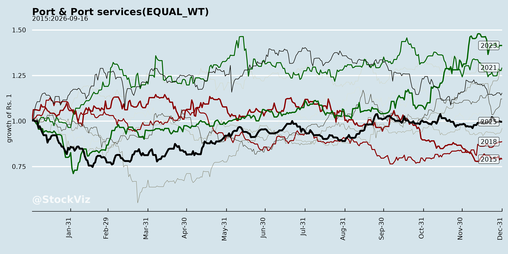
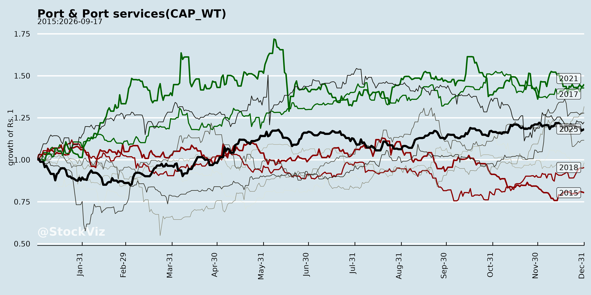
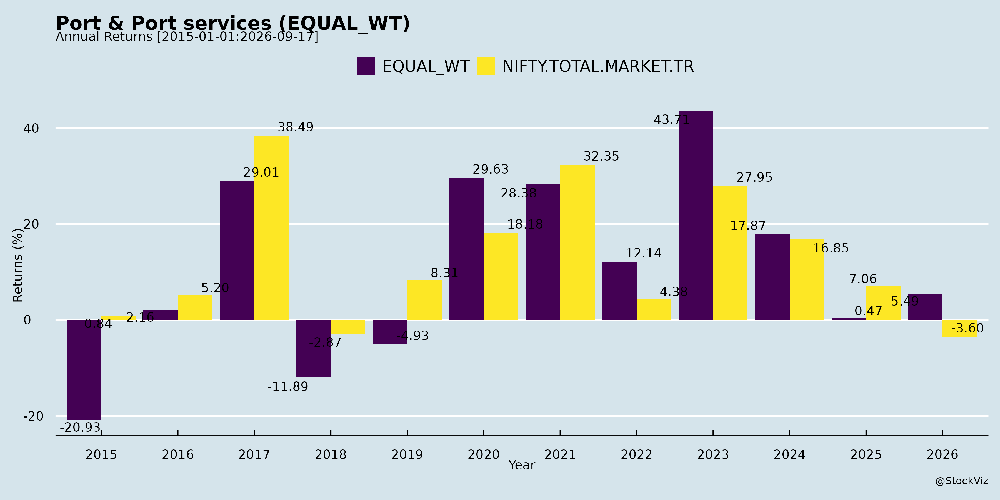
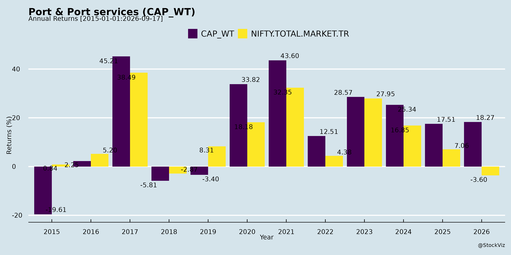
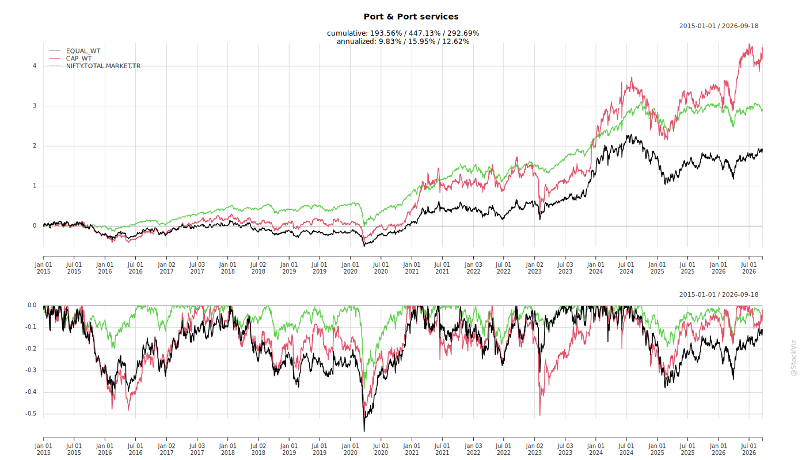
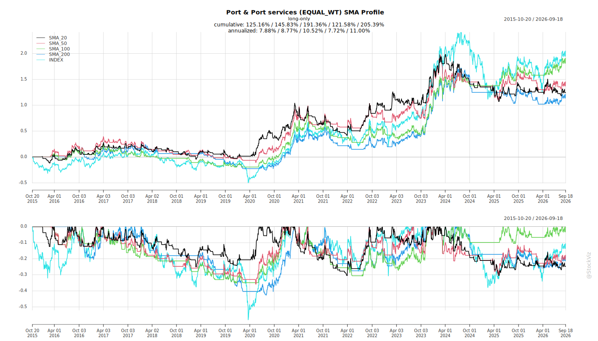
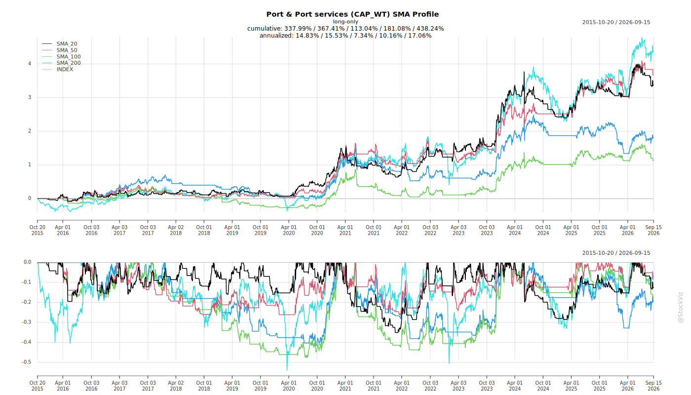
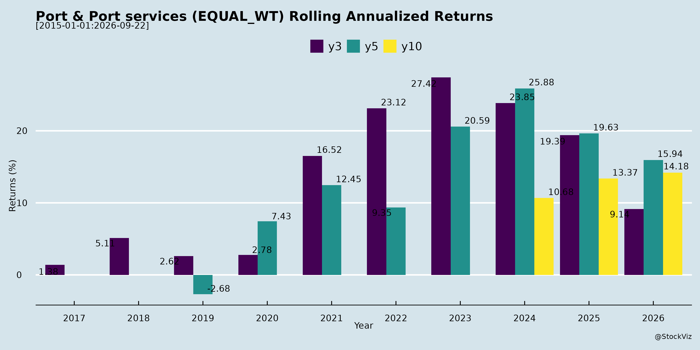
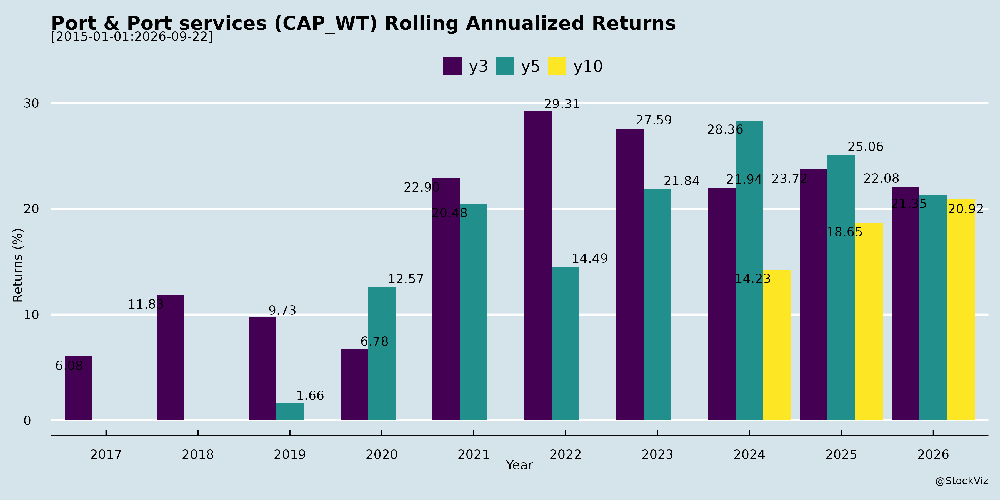

Annual Returns




Cumulative Returns and Drawdowns

SMA Scenarios


Current Distance from SMA
Rolling Returns


EBIT (% of Industry Total)
Revenue (% of Industry Total)
AI Summaries
Analyst
asof: 2025-11-26
Indian Ports & Port Services Sector Analysis
Based on provided documents (Adani Ports investor meet, Allcargo Terminals Q2/H1 FY26 earnings transcript, GPPL/JSW Infra analyst meetings), the sector shows resilience amid global moderation, driven by domestic policy support and capacity expansions. Focus is on containerized cargo (CFS/ICD operators like ATL), with positive operational momentum. Summary below:
Tailwinds
- Policy & Infrastructure Push: Sagarmala (574 projects, ~₹6L Cr), shipbuilding assistance (to Mar’26), 23 waterways by 2030 → Capacity addition of 500-550M TPA (FY23-28), led by coal/containers/petroleum. Enhances efficiency/sustainability (e.g., green fuels).
- Trade Momentum: Port volumes +4% QoQ/+6% YoY (Q2 FY26); addressable CFS/ICD market +10% YoY/+3% QoQ. Potential India-US FTA boosts EXIM (energy/manufacturing/tech).
- Operational Strength (ATL): Volumes +12% QoQ/+7% YoY (168k TEUs Q2); EBITDA/TEU ₹2,390 (+17% YoY, sustainable at ₹2,200-2,300 via scale/tech/ESG). H1 revenue/EBITDA +2%/+21% YoY. Quick ramp-up post-JNPA/Mundra expansions (monthly volumes 55k → 66k TEUs).
- Funding Flexibility: ATL’s internal cash flows + warrants (₹38Cr raised), rights issue (₹80Cr upcoming, promoters participating), debt prepay (₹70Cr).
Headwinds
- Global Macro: IMF global growth moderation (3.3-3.1%, ’24-’26); trade tensions/geopolitics curb advanced economies (~1.5% growth). Easing inflation but persistent pressures.
- Utilization Pressures: ATL facilities hit 90-100% pre-expansion; phased capex needed (total ~₹400Cr for expansions).
- Seasonal/Market Volatility: Import-led growth (75-80% of ATL mix), no major commodity/FTA shifts yet; EXIM ~1/5th exposed to tariff-sensitive trade (pharma/gems/agri, low CFS impact).
Growth Prospects
- Capacity Ramp: ATL from 0.83M → 1.05M TEUs (done), targeting 1.3M by FY27-28 via JNPA (live), Mundra/Chennai (end-2026/early-2027), Farukhnagar ICD (Apr’27, rail/DFCC for domestic/EXIM). Utilization to 80-85% H2 FY26; new sites 6-12 months to peak.
- Market Share/Scale: ATL ~12.5-13% in 80% of India’s EXIM markets (top 1-3 operator). 16-17% volume growth run-rate; rail shift unlocks domestic via Farukhnagar.
- Sector Outlook: 4-6% port volume growth baseline; EXIM tailwinds position India as maritime hub. Investor interest high (multiple conferences/meets).
Key Risks
- Geopolitical/Trade: US tariffs (minimal direct CFS hit per ATL, but ~20% exports vulnerable); no pronounced impact yet.
- Execution/Funding: Phased expansions (to FY30); rights issue timing (BSE-approved, weeks away); debt reliance to bridge ₹280Cr gap.
- Competition: Listed peers (Navkar, GDL) in CFS/ICD; unlisted fragmentation.
- Operational: Capacity ramp delays (e.g., rail for Farukhnagar); exogenous changes (e.g., meet dates). No UPSI shared in investor interacts.
Overall: Bullish sector outlook (strong domestic drivers offset global slowdown). ATL exemplifies growth playbook: EBITDA trajectory + expansions signal 15-20%+ volume potential near-term, with peers (Adani/JSW/GPPL) signaling engagement amid rising capex cycle. Monitor trade deals/utilization for upside.
Financial
asof: 2025-11-26
Summary Analysis: Indian Ports & Port Services Sector
Based on Q3/N9M FY25 Financial Results of Key Players (Adani Ports - APSEZL, Gujarat Pipavav Port - GPPL, JSW Infrastructure, Allcargo Terminals)
The sector demonstrates robust operational resilience and growth momentum, driven by capacity expansions and strategic acquisitions. APSEZL (market leader) reported ~15% YoY revenue growth to ₹7,964 Cr (Q3), GPPL stable at ₹2,629 Cr, and JSW Infra up ~26% to ₹1,182 Cr (post-Navkar acquisition). High EBITDA margins (50-62%) and improving Debt/Equity (0.57-0.77x) underscore financial health. However, legacy disputes and tax changes pose near-term pressures. Sector cargo handling benefits from India’s trade recovery (exports/imports up), govt infra push (Sagarmala), but cyclical trade risks persist.
Tailwinds (Supportive Factors)
- Strong Revenue & Profitability: APSEZL PAT ₹2,518 Cr (+14% YoY), GPPL ₹994 Cr (+stable), JSW ₹336 Cr. High operating margins (APSEZL 60%, JSW 50%, GPPL ~55%) from economies of scale and tariff hikes.
- Strategic Expansions/Acquisitions: APSEZL added Gopalpur Ports (₹3,080 Cr EV), Astro Offshore (USD 195 Mn), Tanzania terminal; JSW acquired Navkar (logistics synergy); GPPL rail associate stable. Boosts capacity (APSEZL 130+ subs/JVs).
- Debt Discipline: Declining leverage (APSEZL 0.77x, JSW 0.57x); asset covers >100% for NCDs. IPO/FD proceeds (JSW) funding capex without deviation.
- Policy Support: Ind AS compliance, SEBI integrated filings; govt focus on port modernization (e.g., Adani Vizhinjam, Dholera).
- Diversification: Logistics (Adani Agri Logistics, JSW Navkar) and international ops (Adani Haifa, Colombo) hedge core port cyclicality.
Headwinds (Challenges)
- Regulatory/Legal Disputes: GPPL: GMB BG encashment (₹185 Cr recoverable claim), arbitration on tank farms (₹672 Cr provision); Adani SSR overhang (SEBI probes closed, but 3 show-cause notices).
- Tax/Regulatory Changes: Finance Act 2024 withdrew indexation on LTCG (GPPL deferred tax ₹169 Cr hit; JSW/Adani remeasured DTL ₹48-184 Cr). MAT credit write-offs (Adani).
- Operational Disruptions: GPPL cyclone Tauktae insurance pending (₹780 Cr claim); forex losses (Adani ₹187 Cr N9M, JSW ₹12 Cr).
- High Finance Costs: APSEZL ₹2,103 Cr (N9M), JSW ₹246 Cr; elevated due to capex funding.
- External Pressures: Adani executive’s US DOJ/SEC indictment (co. not named); subdued Q3 cargo (implied from flat GPPL rev).
Growth Prospects
- High (15-25% CAGR Potential): Capacity doubling via acquisitions (Adani: Gopalpur, Astro fleet; JSW: Navkar logistics; GPPL rail). APSEZL targets ₹23,613 Cr FY25 rev (N9M done).
- Volume Drivers: India port traffic ~1,500 MT target FY25 (CAGR 8-10%); coal/LPG/container focus (Adani Mundra, JSW Jaigarh LPG).
- Capex Pipeline: APSEZL ₹95,556 Cr Port/SEZ assets; JSW Jaigarh/Mangalore expansions (₹1,080 Cr allocated from IPO). Logistics integration adds 20-30% revenue upside.
- EBITDA/ PAT Growth: APSEZL 62% op margin sustained; sector ROE 20-30%. Privatization (e.g., Gopalpur) unlocks value.
- Long-Term: Gati Shakti, ₹2-3 Tn port capex; international (Adani 25% rev from overseas subs).
Key Risks
| Regulatory/Legal |
Disputes (GPPL GMB/arbitration ₹1,200 Cr exposure); Adani SSR/US probes. |
Legal opinions, arbitration progress; clean audits. |
High (GPPL); Med (Adani) |
| Forex/Interest Rate |
Volatility (Adani der. loss ₹141 Cr Q3); rising rates. |
Hedges (cash flow OCI ₹319 Cr loss N9M). |
Med |
| Cyclical/Trade |
Cargo slowdown (global trade, monsoon). |
Diversified cargo (dry bulk 60%); multi-port ops. |
Med |
| Execution/Integration |
Acquisition risks (Adani 160+ subs; JSW Navkar). |
Provisional PPA; strong parent (JSW/Adani). |
Med |
| Tax/Policy |
LTCG/indexation changes; MAT write-offs. |
New regime election; lobbying. |
Low-Med |
| Geopolitical |
Adani intl ops (Israel, Sri Lanka); US scrutiny. |
Localized risks; 75% India rev. |
Low |
Overall Outlook: Positive. Sector poised for 15-20% growth FY26e on expansions, but monitor disputes (GPPL drag) and macros. APSEZL dominant (60% mkt share); JSW/GPPL niche plays. Investors: Focus on leverage, capex ROIs. Unmodified audit opinions signal clean books.
General
asof: 2025-11-26
Summary Analysis: Indian Ports & Port Services Sector
Using the provided regulatory filings from Adani Ports (APSEZL), Allcargo Terminals (ATL), Gujarat Pipavav Port (GPPL), and JSW Infrastructure as inputs, here’s a structured analysis of headwinds, tailwinds, growth prospects, and key risks. These disclosures reflect operational, regulatory, ESG, and expansion activities in the sector as of late 2025.
Tailwinds (Positive Factors)
- ESG Improvements: APSEZL’s MSCI ESG rating upgrade from ‘CCC’ to ‘B’ signals strengthened environmental, social, and governance practices, enhancing investor appeal amid global sustainability mandates. This could set a benchmark for peers.
- Governance Stability: GPPL’s board approvals for new statutory auditors (M S K A & Associates) and re-appointment of Independent Director (Mr. Samir Chaturvedi) indicate proactive compliance and continuity, supporting long-term credibility.
- Sector Resilience: Routine disclosures (e.g., GPPL’s AGM matters) highlight operational continuity despite market volatility.
Headwinds (Negative Factors)
- Regulatory Scrutiny: JSW Infrastructure’s subsidiary (Ennore Coal Terminal Pvt. Ltd.) received a GST Show Cause Notice (SCN) dated Sep 26, 2025, demanding ~Rs. 96.58 Cr in GST (Apr 2019–Mar 2024) plus interest/penalty under CGST/TNGST Acts. Though contested with “no material impact,” it underscores tax audit pressures.
- Clarificatory Filings: ATL’s correction from “lease agreement” to “addendum to term sheet” (effective Sep 24–Oct 31, 2025) for Chennai land hints at documentation/execution delays in expansion deals.
Growth Prospects
- Capacity Expansion: ATL’s term sheet addendum for ~30 acres in Chennai (annual lease Rs. 9 Cr, 15% escalation every 3 years; 6-month security deposit) targets Container Freight Station/Inland Container Depot (CFS/ICD) growth. This positions ATL for higher throughput amid India’s rising trade volumes.
- Strategic Leases: Potential for formalized leases post-evaluation could boost utilization and revenue, aligning with sector demand from logistics/logistics hubs.
- Overall Sector Outlook: ESG upgrades (APSEZL) and expansion intents (ATL) suggest tailwinds from India’s port modernization (e.g., Sagarmala initiative), increasing cargo handling capacity.
Key Risks
| Regulatory/Tax |
GST/tax disputes; potential penalties/interest. |
JSW’s Rs. 96.58 Cr SCN (contested but could escalate). |
| Execution/Contractual |
Delays in finalizing leases; term sheet ambiguities. |
ATL’s short-term addendum (ends Oct 31, 2025); clarification needed. |
| Governance/ESG |
Auditor changes; ESG rating volatility. |
GPPL auditor switch; APSEZL’s prior ‘CCC’ rating. |
| Financial |
Lease costs/security deposits strain cash flows if expansions falter. |
ATL’s Rs. 9 Cr annual rent + deposit. |
| Litigation |
Prolonged SCNs/court proceedings impacting ops. |
JSW’s Chennai GST case (2019–2024 period). |
Overall Assessment: The sector shows moderate growth potential driven by expansions (ATL) and ESG progress (APSEZL), but faces regulatory headwinds (JSW). Tailwinds from compliance outweigh near-term risks, assuming successful contesting of disputes. Monitor GST outcomes and lease conversions for Q4 2025 impacts. No material financial disruptions indicated across filings.
Investor
asof: 2025-11-26
Summary Analysis: Indian Ports & Port Services Sector
Based on the provided documents (primarily Allcargo Terminals Limited’s Q2/H1 FY26 earnings transcript, supplemented by investor interaction notices from Adani Ports, Gujarat Pipavav Port, and JSW Infrastructure), the sector exhibits resilient growth amid global headwinds. Allcargo Terminals (ATL, a key CFS/ICD player) reported strong Q2 results (volumes +12% QoQ/+7% YoY to 168k TEUs; revenue +11% QoQ/+6% YoY to ₹207 Cr; EBITDA +17% QoQ/+24% YoY to ₹40 Cr), driven by capacity expansions and efficiencies. Other filings indicate ongoing investor engagement, signaling confidence. Broader sector tailwinds from policy support outweigh risks, with ATL targeting 13 lakh TEUs capacity (from 8.3 lakh) by FY27-28.
Tailwinds
- Policy & Infrastructure Push: SagarMala (574 projects, ₹6 lakh Cr), shipbuilding assistance (extended to Mar’26), and 23 inland waterways by 2030 drive capacity addition (500-550 MMT pa FY23-28, led by coal/containers/petroleum) and green tech (e.g., solar shifts at ATL).
- Trade & Volume Momentum: Port volumes +4-6% YoY/QoQ; addressable CFS/ICD market +10% YoY/+3% QoQ. ATL’s imports (75-80% mix) benefit from economy tailwinds; potential India-US FTA boosts EXIM flows.
- Operational Efficiencies: ATL’s EBITDA/TEU at ₹2,390 (+17% YoY), sustainable at ₹2,200-2,300 via scale (transport/equipment optimization), tech (myCFS app, yard management), and ESG (70% solar in Chennai).
- Market Positioning: ATL’s 12.5-13% share in 80% of India’s EXIM markets (top 1-3 operator); expansions in JNPA/Mundra yield quick uptake (e.g., +10-12% monthly volumes post-JNPA).
Headwinds
- Global Macro Pressures: IMF projects moderation (3.1-3.3% growth ’24-’26); advanced economies ~1.5%; emerging ~4%. Persistent trade tensions/tariffs (e.g., US impacting ~1/5 of India’s EXIM, though limited CFS exposure via pharma/gems/agri).
- Geopolitical Uncertainty: Affects trade flows, but ATL notes minimal impact on addressable market.
- Seasonal/Commodity Shifts: No major FTA-driven mix changes; reliance on imports exposes to volatility.
Growth Prospects
- Capacity Ramp-Up: ATL from 10.5 lakh TEUs (post-JNPA/Mundra) to 13 lakh by FY27 (Mundra/Chennai by end-’26/early-’27; rail-linked Farukhnagar ICD by Apr’27). H2 FY26 volumes to hit 80-85% utilization (from 76-77%; Sep’25 run-rate 66k TEUs/month).
- Funding & Cash Generation: ATL’s ₹120 Cr equity (warrants + ₹80 Cr rights issue, promoter participation), debt prepayments (₹70 Cr), and internal accruals cover ₹400 Cr capex (phased to FY30). Strong FCF from existing ops.
- Sector Expansion: Investor meets (Adani Singapore conference; JM Financial events for GPPL/JSW) highlight group/1-on-1 engagements; JNPA expansions “live,” unlocking earnings.
- Rail/Domestic Shift: ATL’s Farukhnagar ICD to tap DFCC for domestic cargo; broader rail acceptance aids inland efficiency.
Key Risks
| Execution |
New project gestation (6-12 months to 80% utilization; Farukhnagar 2-3 yrs to 75-80%). |
Proven ramp-up (e.g., JNPA +10-12% volumes in 1Q); established markets/customer ties. |
| Financial |
Debt for expansions; rights issue timing (BSE-approved, “next few weeks”). |
Strong EBITDA growth (+24% YoY); prepayments reduce leverage; promoter backing. |
| Competition |
Listed peers (Navkar, GDL) in CFS/ICD; market share estimates internal/unpublished. |
ATL’s EXIM focus (75-80% imports), top positioning in 5 locations/7 facilities. |
| External |
Trade policy shifts/FTAs; volume moderation if tariffs bite (low CFS exposure). |
Diversified cargo; 4-6% baseline port growth; no UPSI shared in meets. |
| Operational |
Utilization dips (target 80-85%); exigency-driven meeting changes. |
Phased capex; 90-95% peaks pre-expansion justify builds. |
Overall Outlook: Positive. Sector poised for 10-15% volume growth (ATL-led), supported by policy/infra. Risks are manageable via cash flows/efficiencies. Monitor global trade for near-term volatility; expansions position players for India’s maritime hub ambitions.
Meeting
asof: 2025-11-26
Summary Analysis: Indian Ports & Port Services Sector (Based on Q2/H1 FY26 Disclosures from APSEZ, ATL, GPPL, JSW Infra)
The analysis draws from recent disclosures of key players—Adani Ports & SEZ (APSEZ), Allcargo Terminals (ATL), Gujarat Pipavav Port (GPPL), and JSW Infrastructure—highlighting robust operational momentum amid regulatory challenges. Overall, the sector shows strong volume-driven growth (revenue up 15-30% YoY across peers) supported by India’s trade recovery, but faces litigation and tax headwinds. Sector tailwinds dominate short-term, with capex signaling multi-year expansion.
Tailwinds (Positive Drivers)
- Volume & Revenue Surge: GPPL revenue +32% YoY (₹5,498 Cr H1), JSW +24% (₹2,489 Cr), ATL +24% consolidated ops income. Implied cargo growth from trade rebound (e.g., GPPL ops expenses up on higher activity).
- Profitability Resilience: PAT growth—GPPL +35% (₹2,590 Cr standalone), JSW +13% consolidated (₹758 Cr), ATL +3% (₹20 Cr). High margins (GPPL EBITDA-like strength) despite costs.
- Cash Generation & Shareholder Returns: Strong CFO (GPPL ₹2,000 Cr, JSW ₹1,311 Cr, ATL ₹59 Cr). GPPL declared ₹5.4/share interim dividend (record date Nov 12, 2025); prior final paid.
- Insurance/Claims Recovery: GPPL received full cyclone “Tauktae” claim (₹781 Cr total).
- Governance Stability: APSEZ 99.34% approval for new Independent Director (Manish Kejriwal), signaling board continuity.
Headwinds (Challenges)
- Regulatory & Tax Scrutiny: ATL Income Tax search (Feb 2025) ongoing; GST demands ₹25 Cr (stay granted) + ₹4 Cr on subsidiary. JSW/ATL forex losses (₹130 Cr Q2 JSW hedge).
- Litigation/Disputes: GPPL GMB arbitration on ₹556 Cr BG encashment/LD; tank farm arbitration (₹682 Cr BG deposited, stay granted). ATL CBI closure pending.
- Cost Pressures: Finance costs up (JSW ₹191 Cr H1, ATL ₹29 Cr); depreciation high on capex (GPPL ₹631 Cr). Employee/ops expenses elevated.
- Macro Sensitivities: Forex volatility (JSW cash flow hedge losses ₹168 Cr OCI); cyclone-like disruptions.
Growth Prospects
- Capacity Expansion: High capex—JSW ₹902 Cr H1 (ports/logistics), GPPL ₹752 Cr, ATL investments in Speedy/HORCL. New subs (ATL FTWZ, JSW Navkar acquisition).
- Diversification: JSW logistics segment emerging (₹301 Cr H1 revenue); ATL consolidated ports/JVs (e.g., ALPPL, HORCL). APSEZ ports/logistics focus.
- Volume Outlook: India trade growth (exports/imports); JSW port ops 86% of revenue. H1 trends suggest FY26 revenue +20-25% sector-wide.
- EBITDA/ROE Upside: Margins stable 50-60%; JSW port EBITDA ₹942 Cr H1. Potential M&A (ATL share swaps).
Key Risks
| Regulatory/Litigation |
Tax searches (ATL), GST demands (stays), arbitrations (GPPL ₹1,200+ Cr exposure). |
High; stays/court reliefs ongoing, but cash outflows/BG tied-up. |
| Operational |
Cyclones/disruptions; single-segment reliance (ports 80-100% revenue). |
Medium; insurance covers, but forex/Capex delays. |
| Financial |
Debt up (JSW ₹4,900 Cr borrowings); forex/interest sensitivity. |
Medium; strong CFO buffers, but rate hikes could pressure. |
| Execution |
Capex delays (JSW CWIP ₹2,173 Cr); JV/associate reliance. |
Medium; diversified portfolio (23+ JSW subs). |
| Market |
Trade slowdown, competition (Adani dominance). |
Low-medium; sector consolidation favors scale players. |
Overall Outlook: Positive (Buy/Hold)—Tailwinds from trade/volumes outweigh headwinds; growth via capex (₹2,000+ Cr H1 sector). Monitor Q3 litigations/tax resolutions. Sector PE likely 15-20x FY26E, supported by 15-20% EPS CAGR.
Press Release
asof: 2025-11-26
Analysis of Indian Ports & Port Services Sector
Using the provided documents from key players—Adani Ports & SEZ Ltd (APSEZ, largest integrated player), Allcargo Terminals Ltd (ATL, CFS/ICD specialist), and JSW Infrastructure Ltd (second-largest private port operator)—this analysis synthesizes sector dynamics for Q2/H1 FY26 (as of Oct-Nov 2025). The sector shows robust financial momentum amid expansions, tempered by commodity headwinds and execution risks.
Tailwinds (Positive Drivers)
- Strong Operational & Financial Performance:
- JSW: Cargo volumes +3% YoY (28.9 MnT), operational revenue +26% YoY (₹1,266 Cr), EBITDA +17-18% YoY (₹610-716 Cr); PAT ₹369 Cr.
- ATL: Revenue +6% YoY/+11% QoQ (₹207 Cr), EBITDA +24% YoY/+17% QoQ (₹40 Cr); volumes +12% QoQ.
- APSEZ: No Q2 financials, but leadership in sustainability reinforces premium positioning.
- ESG & Sustainability Momentum: APSEZ’s TNFD adoption (first integrated transport utility adopter) signals nature-positive shift; mangrove afforestation (4,200 Ha restored +3,000 Ha conserved); JSW’s ESG-aligned expansions.
- Healthy Balance Sheets: JSW’s Net Debt/EBITDA at 0.75x (TTM), ₹3,088 Cr cash; enables aggressive growth without leverage strain.
- Market Share & Diversification: APSEZ at 28% of India’s port volumes; JSW group cargo share up to 54%; ATL’s pan-India CFS/ICD network with digital tools (myCFS).
Headwinds (Challenges)
- Commodity & Market Volatility: JSW’s Paradip Iron Ore terminal shortfall (2.1 MnT) due to weak seaborne iron ore exports moderated growth (actual +3% vs. potential ~10%).
- Volume Moderation in Spots: Despite overall gains, YoY cargo growth muted at JSW (3%); ATL flat YoY PAT.
- External Dependencies: Reliance on hinterland cargo, EXIM trends, and global trade (e.g., iron ore exports tied to China/sea-borne markets).
Growth Prospects
- Capacity Expansion Pipeline: | Company | Current Capacity | Target | Capex/Strategy | |———|——————|——–|—————| | APSEZ | 633 MnTpa | 1 BnT by 2030 | “Shore-to-door” integration (15 ports, rail, logistics, 25k+ trucks); AI/digital optimization. | | JSW | 177 MnTpa | 400 MnTpa by FY30 | ₹30,000 Cr capex (ports) + ₹9,000 Cr (logistics); new greenfield ports (Keni, Murbe), Kolkata berths (6.3 MnTpa), Ballari MMLP (₹380 Cr, ops by Q4FY26), Navkar integration. | | ATL | N/S | 3-yr strategic plan | Pan-India expansions (Nhava Sheva, Mundra, Chennai, Kolkata); multimodal parks. |
- Strategic Wins: JSW’s public hearings cleared, 30-yr Kolkata concession, investment-grade ratings (BBB-/Stable from S&P/Fitch); APSEZ’s global sustainability benchmarks (top 5% S&P CSA, WB CPI rankings).
- Sector Enablers: Port privatization, logistics network buildout, container/diversified cargo shift (JSW/Navkar +20-46% YoY).
Key Risks
- Commodity/Trade Exposure: Iron ore, dry bulk weakness (JSW); global seaborne fluctuations.
- Execution Delays: Greenfield projects (public hearings, capex overruns); ramp-up at new assets (e.g., Tuticorin, Ballari).
- Macro/Economic: Intense competition, wage hikes, demand slowdowns, political instability, forex/immigration issues (JSW forward-looking).
- Regulatory/Environmental: TNFD compliance costs; ESG scrutiny; client concentration.
- Financial: High capex (JSW ₹39,000 Cr total) amid potential earnings volatility.
Summary
The Indian ports sector is buoyed by strong tailwinds like revenue/EBITDA growth (17-26% YoY), low leverage, and ESG leadership, driving ambitious growth prospects (e.g., JSW/APSEZ targeting 400 MnTpa-1 BnTpa by 2030 via ₹30k+ Cr capex). Headwinds are limited to commodity softness (e.g., iron ore), but key risks center on execution, trade volatility, and competition. Overall, sentiment is positive—resilient balance sheets position leaders for market share gains amid India’s trade/logistics boom, with FY26 disclosures (e.g., TNFD) enhancing transparency. Sector outlook: Bullish with 10-20%+ CAGR potential if expansions deliver.
Copyright © 2023 SAS Data Analytics Pvt. Ltd. All rights reserved.
🐞